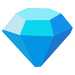

Castle-Skin Event Q&As
Do the event tokens carry over?
During Castle-Skin Special Events, Lords can collect two types of tokens:
| Token | Example | Source | Use |
|---|---|---|---|
| Lv. 2 Token | Stirring Rod | Collect from complete quests such as defeating Titans and monsters | Consume to unlock Event Pass rewards for Lv. 2 Tokens |
| Lv. 2 Token | Potion Flask | Collect from Event Pass, Gem Wishing Pool, and purchases | Consume to spin for Hero Cards and other rewards at Lucky Draws |
The Tokens can only be used for the specific event. When the event ends, unused Tokens will be converted and delivered to Lords by mail. Each Lv. 1 Token Token converts to 10. Each Lv. 2 Token converts to 10

.